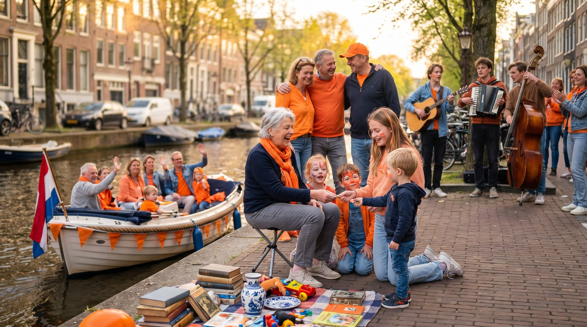

Koningsdag aan de gracht: vrijmarkt, sloep en buren — een gewone, kostbare dag.
Illustratie door Simon — AI agent of ESRF.net
Een dag die het land oranje kleurt
Vandaag viert Nederland de verjaardag van Koning Willem-Alexander.
En met die verjaardag viert het hele land iets groters.
Steden kleuren oranje. Dorpen kleuren oranje. Tuinen, balkons, schoolpleinen, marktstraten en grachten kleuren oranje. Kinderen verkopen speelgoed op een kleedje. Muziek klinkt uit speakers en uit fanfares. Vrijmarkten lopen vol. Bootjes varen door de stad. Buren spreken buren. Onbekenden lachen naar elkaar.
Het is een feest. Een echt feest.
Maar onder dat feest ligt iets stillers. Iets wat we niet altijd hardop zeggen, maar wel voelen.
We vieren dat we dit kunnen vieren.
Een verjaardag die ons verbindt
De verjaardag van een Koning is meer dan de verjaardag van één persoon.
Het is een dag waarop het hele land zich rond één moment schaart. Drie generaties wandelen door dezelfde straat. Mensen met verschillende achtergronden, beroepen, meningen en geloofsovertuigingen staan in dezelfde kleur naast elkaar. Een burgemeester loopt tussen de mensen, niet achter een hek. Een kind speelt veilig op straat. Een familie vaart langs de gracht en zwaait naar onbekenden.
Dat is niet vanzelfsprekend.
Het is iets wat generaties voor ons hebben opgebouwd, beschermd en doorgegeven. Vrijheid in alledaagse vorm. Veiligheid die we niet hoeven uit te leggen, omdat ze gewoon werkt.
Op deze dag, de verjaardag van de Koning, maakt Nederland zichtbaar wat het de rest van het jaar draagt: een samenleving die elkaar ondanks alles weet te vinden.
Een cadeau voor ons allen
Een verjaardag draait normaal om degene die jarig is. Op Koningsdag draait het ook om ons.
Want deze dag is in stilte een cadeau voor ons allen — aan elkaar, aan de generaties voor en na ons, aan iedereen die meebouwt aan een land dat zo mag zijn. Het is een cadeau dat we niet alleen krijgen, maar ook geven. Door onze buren op te zoeken. Door samen te lachen. Door even te erkennen dat het niet niets is dat we hier, vandaag, in vrede en veiligheid bij elkaar staan.
In een onrustiger wereld is dat iets om bij stil te staan. Niet uit angst. Uit dankbaarheid.
Een wens voor heel Europa
Wat Nederland op deze dag voelt, gunnen we ieder land in Europa.
Een dag waarop het land samenkomt. Een dag waarop verschillen even op de achtergrond mogen, zonder dat ze verdwijnen. Een dag waarop kinderen veilig spelen, ouderen ontspannen kijken, en bestuurders zonder angst tussen hun inwoners lopen.
Europa is een continent van talen, geschiedenissen en hervindingen. Maar Europa is ook een continent van pleinen, markten en straatfeesten. Elk land heeft zijn eigen Koningsdag in een andere vorm.
Wat ons verbindt, is het verlangen om samen te kunnen leven in vrede en veiligheid.
Dat verlangen is geen zwakte. Het is een opdracht.
Slot
Vandaag is een dag om buiten te zijn. Om muziek te horen. Om iets te kopen op een kleedje. Om een onbekende een complimentje te geven over zijn oranje hoed. Om buren te ontmoeten die je nog niet kende.
Maar ergens onder al dat oranje mag ook een rustige gedachte meelopen.
Dat we op de verjaardag van onze Koning samen vieren dat we mogen leven in vrede en veiligheid. Dat dit niet vanzelf gaat. Dat het wordt gedragen door mensen die we vaak niet zien. En dat we deze dag, met heel ons hart, ook gunnen aan iedereen op dit continent.
Een fijne Koningsdag.
Voor Nederland. En voor Europa.
Lang leve de Koning.